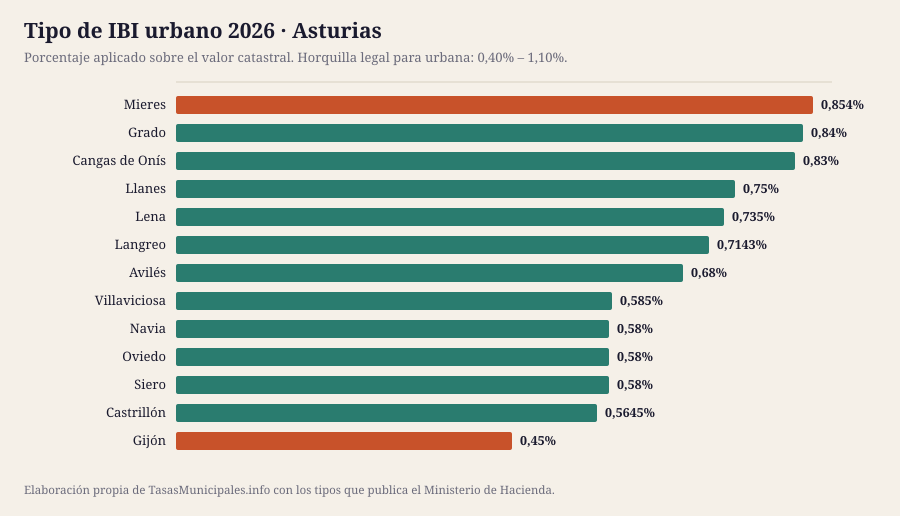
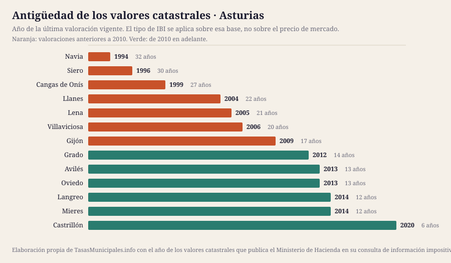

IBI, tasa de basuras y plusvalía en Asturias 2026
Esta guía reúne el IBI, la plusvalía municipal, el impuesto de circulación y las bonificaciones de los 13 municipios de Asturias que cubrimos, con el detalle de cada uno y una tabla para compararlos de un vistazo. Población cubierta: 782.714 habitantes.
Lo que cuesta el IBI en Asturias en 2026
El tipo de IBI urbano en Asturias se mueve entre el 0,45% de Gijón y el 0,854% de Mieres, con una media de 0,67% en los 13 municipios analizados. Esa horquilla parece pequeña, pero sobre un valor catastral de 50.000 € supone una diferencia de 202 € al año según dónde esté el inmueble: 225 € en Gijón frente a 427 € en Mieres.
El tipo no lo explica todo: sobre él se aplica el valor catastral, y en Asturias las valoraciones vigentes van de 1994 en Navia a 2020 en Castrillón. En 7 de los 13 municipios con dato la última valoración es anterior a 2010, así que la base del recibo arrastra el mercado inmobiliario de entonces. El año de los valores de cada municipio está en la tabla, tal y como lo publica el Ministerio de Hacienda.
Aquí no publicamos el importe de la tasa de residuos ni las fechas de cobro de cada municipio: no existe fuente estatal que los recoja y preferimos el hueco a un dato sin respaldo. Lo que sí fija la ley es el plazo por defecto del IBI, del 1 de septiembre al 20 de noviembre cuando la ordenanza no señala otro (art. 62.3 de la Ley General Tributaria). La mecánica general del impuesto está en las guías de IBI 2026, bonificaciones y plusvalía; aquí van los datos de Asturias.
Ficha fiscal de cada municipio
Tabla comparativa: el IBI en los 13 municipios de Asturias
Ordenable por cualquier columna. Todas las cifras salen de la consulta de información impositiva del Ministerio de Hacienda. «Cuota IBI» aplica el tipo de cada municipio a un valor catastral común de 50.000 €; con el de tu recibo, usa la calculadora. «Valores catastrales» es el año de la última valoración vigente, que determina la base sobre la que se aplica el tipo.
| Municipio | Habitantes | IBI urbano | IBI rústico | Cuota IBI (VC 50.000 €) | Valores catastrales | Tipo BICE |
|---|---|---|---|---|---|---|
| Gijón | 269.894 | 0,45% | 0,45% | 225 € | 2009 | 0,79% |
| Oviedo | 223.968 | 0,58% | 0,77% | 290 € | 2013 | 1,3% |
| Avilés | 75.517 | 0,68% | 0,5% | 340 € | 2013 | 0,6% |
| Siero | 53.049 | 0,58% | 0,5% | 290 € | 1996 | 0,6% |
| Langreo | 38.612 | 0,7143% | 0,7945% | 357 € | 2014 | 1,3% |
| Mieres | 36.373 | 0,854% | 0,874% | 427 € | 2014 | 0,936% |
| Castrillón | 21.998 | 0,5645% | 0,5591% | 282 € | 2020 | 1,1% |
| Villaviciosa | 15.379 | 0,585% | 0,7% | 292 € | 2006 | 0,95% |
| Llanes | 13.486 | 0,75% | 0,65% | 375 € | 2004 | 0,6% |
| Lena | 10.382 | 0,735% | 0,55% | 368 € | 2005 | 1,3% |
| Grado | 9.681 | 0,84% | 0,7% | 420 € | 2012 | 0,6% |
| Navia | 8.031 | 0,58% | 0,9% | 290 € | 1994 | 1,3% |
| Cangas de Onís | 6.344 | 0,83% | 0,5% | 415 € | 1999 | 0,6% |


Quién gestiona y cobra el IBI en Asturias
El recibo, el calendario y las solicitudes se tramitan donde esté la recaudación, que no siempre es el ayuntamiento:
| Provincia | Municipios en la guía | Organismo de recaudación | Estado del enlace |
|---|---|---|---|
| Asturias | 13 | Servicios Tributarios del Principado de Asturias | responde correctamente |
De ahí que no haya una fecha única para toda Asturias: cada organismo publica su calendario.
¿Dónde se paga más y menos IBI en Asturias?
La mediana del tipo urbano de los 13 municipios de Asturias es del 0,68%, y queda 0,074 puntos por encima de la mediana nacional de la guía (0,61%): 37 € más al año por un inmueble de 50.000 €.
En el extremo alto está Mieres con el 0,854%; en el bajo está Gijón con el 0,45%. Ojo: un tipo alto no significa un recibo alto, porque la cuota es valor catastral × tipo. Ranking nacional →
Quién ha movido el tipo entre 2024 y 2025
En Asturias, un municipio ha subido el tipo y un municipio lo ha bajado; el resto lo mantiene.
| Municipio | 2024 | 2025 | Variación |
|---|---|---|---|
| Grado | 0,88% | 0,84% | Baja 0,040 puntos |
| Oviedo | 0,54% | 0,58% | Sube 0,040 puntos |
ICIO, impuesto de circulación y plusvalía en Asturias
El IBI no es el único tributo que aprueba un ayuntamiento. En Asturias, el ICIO va del 3,2% al 4% (mediana 4%); un turismo de 8 a 11,99 CV paga entre 47,71 € y 64,00 € al año; 5 de 12 aplican los coeficientes máximos de plusvalía del art. 107.4 TRLRHL.
| Municipio | ICIO (obras) | IVTM 8–11,99 CV | Plusvalía: tipo máximo | ¿Coeficientes al tope legal? |
|---|---|---|---|---|
| Avilés | 4% | 58,26 € | 22% | Sí |
| Cangas de Onís | 4% | 62,36 € | 28% | No |
| Castrillón | 3,99% | 52,79 € | 20% | No |
| Gijón | 4% | 61,30 € | 25% | No |
| Grado | 4% | 54,53 € | 30% | No |
| Langreo | 4% | 61,14 € | 30% | Sí |
| Lena | 3,31% | 60,51 € | — | — |
| Llanes | 4% | 48,05 € | 30% | No |
| Mieres | 4% | 58,13 € | 30% | Sí |
| Navia | 3,2% | 47,71 € | 25% | No |
| Oviedo | 4% | 64,00 € | 20% | No |
| Siero | 3,8% | 54,42 € | 30% | Sí |
| Villaviciosa | 4% | 58,11 € | 26% | Sí |
Fuente: Ministerio de Hacienda. El guion marca lo que la consulta no publica. La tarifa completa del IVTM está en cada ficha.
Guía del impuesto de circulación → · Comparativa del IVTM → · Quién aplica el coeficiente máximo de plusvalía →
Cuándo se revisaron los valores catastrales en Asturias
La cuota del IBI es valor catastral × tipo, así que la fecha de la última valoración colectiva pesa tanto como el porcentaje que vota el pleno. En Asturias la mediana está en 2009, más reciente que la del conjunto de la guía (2005), y 6 de 13 municipios arrastran valores de hace 20 años o más.
| Municipio | Año de la valoración | Antigüedad | Tipo urbano |
|---|---|---|---|
| Navia | 1994 | 32 años | 0,58% |
| Siero | 1996 | 30 años | 0,58% |
| Cangas de Onís | 1999 | 27 años | 0,83% |
| Llanes | 2004 | 22 años | 0,75% |
| Lena | 2005 | 21 años | 0,735% |
| Villaviciosa | 2006 | 20 años | 0,585% |
| Gijón | 2009 | 17 años | 0,45% |
| Grado | 2012 | 14 años | 0,84% |
| Oviedo | 2013 | 13 años | 0,58% |
| Avilés | 2013 | 13 años | 0,68% |
| Langreo | 2014 | 12 años | 0,7143% |
| Mieres | 2014 | 12 años | 0,854% |
| Castrillón | 2020 | 6 años | 0,5645% |
Qué es el valor catastral, cómo se consulta y cómo se corrige → · Qué implica una ponencia desfasada →
Población de los municipios de Asturias (2020–2025)
El padrón no cambia el IBI, pero sí explica la tasa de residuos: cuando el coste del servicio se reparte entre menos vecinos, la tarifa sube. En conjunto, los 13 municipios de Asturias que cubrimos han perdido 84 habitantes desde 2020 (5 crecen, 8 pierden población).
| Municipio | 2020 | 2025 | Variación | % |
|---|---|---|---|---|
| Gijón | 271.717 | 269.894 | -1.823 | -0,7 % |
| Oviedo | 219.910 | 223.968 | +4.058 | +1,8 % |
| Avilés | 77.791 | 75.517 | -2.274 | -2,9 % |
| Siero | 51.509 | 53.049 | +1.540 | +3,0 % |
| Langreo | 39.183 | 38.612 | -571 | -1,5 % |
| Mieres | 37.537 | 36.373 | -1.164 | -3,1 % |
| Castrillón | 22.273 | 21.998 | -275 | -1,2 % |
| Villaviciosa | 14.470 | 15.379 | +909 | +6,3 % |
| Llanes | 13.473 | 13.486 | +13 | +0,1 % |
| Lena | 10.701 | 10.382 | -319 | -3,0 % |
| Grado | 9.703 | 9.681 | -22 | -0,2 % |
| Navia | 8.322 | 8.031 | -291 | -3,5 % |
| Cangas de Onís | 6.209 | 6.344 | +135 | +2,2 % |
Fuente: INE, padrón a 1 de enero.

Ficha fiscal de los 13 municipios de Asturias
Cada ficha recoge el detalle de ese ayuntamiento: tipos aprobados, calendario de cobro, bonificaciones, plusvalía y enlaces oficiales donde comprobarlo.
- Gijón — IBI 0,45% · cuota 225 € con VC de 50.000 € · valores de 2009
- Oviedo — IBI 0,58% · cuota 290 € con VC de 50.000 € · valores de 2013
- Avilés — IBI 0,68% · cuota 340 € con VC de 50.000 € · valores de 2013
- Siero — IBI 0,58% · cuota 290 € con VC de 50.000 € · valores de 1996
- Langreo — IBI 0,7143% · cuota 357 € con VC de 50.000 € · valores de 2014
- Mieres — IBI 0,854% · cuota 427 € con VC de 50.000 € · valores de 2014
- Castrillón — IBI 0,5645% · cuota 282 € con VC de 50.000 € · valores de 2020
- Villaviciosa — IBI 0,585% · cuota 292 € con VC de 50.000 € · valores de 2006
- Llanes — IBI 0,75% · cuota 375 € con VC de 50.000 € · valores de 2004
- Lena — IBI 0,735% · cuota 368 € con VC de 50.000 € · valores de 2005
- Grado — IBI 0,84% · cuota 420 € con VC de 50.000 € · valores de 2012
- Navia — IBI 0,58% · cuota 290 € con VC de 50.000 € · valores de 1994
- Cangas de Onís — IBI 0,83% · cuota 415 € con VC de 50.000 € · valores de 1999
Preguntas frecuentes sobre el IBI y las tasas en Asturias
¿Qué municipio de Asturias tiene el IBI más alto en 2026?
De los 13 municipios analizados, el tipo urbano más alto es el de Mieres (0,854%) y el más bajo el de Gijón (0,45%). Sobre un valor catastral de 50.000 € son 427 € frente a 225 € al año.
¿Cuál es el tipo medio de IBI en Asturias?
La media de los 13 municipios de Asturias que recoge esta guía es del 0,67%, con una mediana del 0,68%. La ley permite moverse entre el 0,40% y el 1,10% en urbana.
¿Cuándo se paga el IBI en Asturias?
No hay una fecha única: la fija cada ordenanza y se aprueba cada ejercicio, por eso no publicamos fechas concretas. Cuando la ordenanza no señala otro plazo se aplica el del artículo 62.3 de la Ley General Tributaria, del 1 de septiembre al 20 de noviembre, y quien lo modifique no puede dejarlo en menos de dos meses. El calendario del año lo publica el organismo que recauda, enlazado en la ficha de cada municipio.
¿Cuánto se paga de basuras en Asturias?
No lo publicamos porque no podemos verificarlo: la tarifa está en la ordenanza fiscal de cada ayuntamiento y ninguna administración estatal las reúne. La Ley 7/2022 obliga desde el 10 de abril de 2025 a cobrar una tasa de residuos específica, diferenciada y no deficitaria (art. 11.3), y solo exige comunicarla a la comunidad autónoma (art. 11.5). En la guía de la tasa de residuos explicamos dónde localizar la tuya.
¿Quién cobra el IBI en Asturias?
En Asturias la recaudación de buena parte de los ayuntamientos corre a cargo de: Servicios Tributarios del Principado de Asturias. El resto la lleva su propio ayuntamiento. Cada ficha indica cuál corresponde y enlaza dónde consultar el calendario.
¿Dónde cuesta más el impuesto de circulación en Asturias?
Por un turismo de 8 a 11,99 caballos fiscales, el más caro de Asturias es Oviedo con 64,00 € al año y el más barato Navia con 47,71 €. La cuota mínima que fija la ley es de 34,08 €.
Qué está verificado en esta página
| Dato | Estado en Asturias |
|---|---|
| Tipos de IBI, rústica, BICE y año de los valores catastrales | 13 de 13 contrastados con el Ministerio de Hacienda |
| Webs oficiales de los ayuntamientos | 4 de 4 respondían el 2026-07-25 |
| Tasa de residuos y fechas de cobro | No se publican: las fija cada ordenanza, no hay registro estatal y no hemos podido acceder a una fuente primaria |
Si un dato no coincide con lo que dice tu ayuntamiento, manda la ordenanza publicada en el boletín oficial. Qué fuente respalda cada dato y cómo corregimos → · Avisar de un error
Normativa citada en esta página
- Real Decreto Legislativo 2/2004 (texto refundido de la Ley Reguladora de las Haciendas Locales)
- Real Decreto Legislativo 1/2004 (texto refundido de la Ley del Catastro Inmobiliario)
- Ley 7/2022, de 8 de abril, de residuos y suelos contaminados para una economía circular
- Real Decreto-ley 26/2021, de 8 de noviembre (adaptación del IIVTNU a la jurisprudencia constitucional)
- Sentencia del Tribunal Constitucional 182/2021, de 26 de octubre
- Ley 58/2003, de 17 de diciembre, General Tributaria
- Sede Electrónica del Catastro